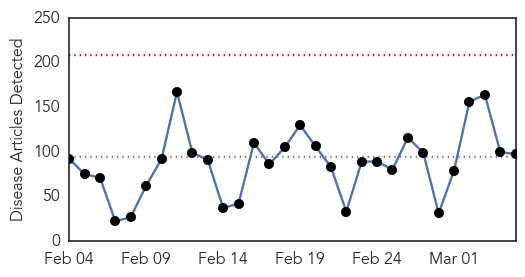
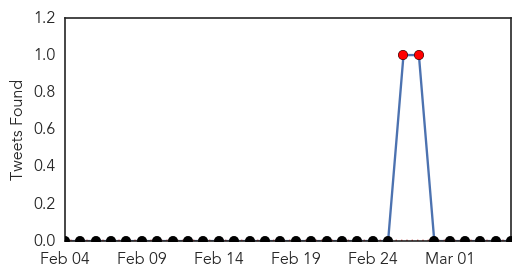
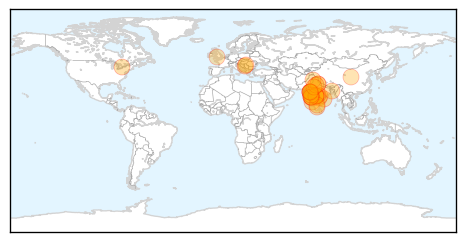

Ebola
30-Day Web Trend
0 alerts, 0 warnings

30-Day Twitter Trend
6 alerts, 5 warnings

Article Locations

Article Confidences

Top Articles:
- 1.000
- After nearly a year, Liberia has released its last Ebola patient
- 1.000
- Liberia's last Ebola patient discharged from center
- 1.000
- Liberia releases last Ebola patient, no new infections detected
- 1.000
- Can Your Dog Get It?
- 1.000
- Last Ebola patient is released in Liberia
- 1.000
- Experimental Ebola Vaccine Used on Doctor Shows Promise
- 1.000
- Last Patient: Liberia on Track to Being Ebola Free?
- 1.000
- Ebola in graphics: The toll of a tragedy
- 1.000
- Liberia′s last confirmed Ebola patient released from hospital
- 1.000
- Last Ebola patient is released in Liberia
- 1.000
- Liberia's last Ebola patient released from treatment centre
- 1.000
- Last Ebola patient released from Liberia treatment unit
- 1.000
- Liberia's last Ebola patient discharged from center
- 1.000
- After nearly a year, Liberia has released its last Ebola patient
- 1.000
- Last Ebola patient is released in Liberia
- 1.000
- WHO to begin large-scale testing of Ebola vaccine in Guinea
- 1.000
- Last Ebola patient is released in Liberia
- 1.000
- Emergency Postexposure Vaccination With Vesicular Stomatitis Virus–Vectored Ebola Vaccine After Needlestick
- 1.000
- Ebola virus death toll in West Africa reaches 9,792: WHO
- 0.999
- Liberia releases last Ebola patient
- 0.999
- UPDATE 1-Liberia releases last known Ebola patient from care
- 0.999
- Last Known Ebola Patient in Liberia Is Discharged
- 0.999
- Singapore heightens Ebola screening at airport
- 0.999
- FG mulls N8bn Ebola prevention package
- 0.999
- Liberia releases last Ebola patient no new infections detected
- 0.999
- Canada remains committed to domestic preparedness and global fight against Ebola - Guinea
- 0.999
- Sudan Vision Daily
- 0.999
- Last Ebola Patient in Liberia Leaves Treatment Ward
- 0.998
- Q&A on trial of Ebola Virus Disease vaccine in Guinea
- 0.998
- Liberia's last Ebola patient discharged
- 0.998
- Hold on: Ebola virus threat not yet over
- 0.998
- Liberia discharges ‘last Ebola patient’ from medical care
- 0.998
- Liberia releases last Ebola patient
- 0.998
- Sierra Leone Launches New Initiative to Stop Ebola Spread - Sierra Leone
- 0.998
- Liberia releases last known Ebola patient from care
- 0.997
- Sierra Leone Launches New Initiative to Stop Ebola Spread
- 0.997
- Liberia discharges its last confirmed patient with no new cases
- 0.997
- Untitled Article
- 0.996
- A Mishap Sheds Light on an Ebola Vaccine
- 0.996
- Liberia releases last known Ebola patient from care
- 0.996
- WHO Reports Surge in West African Ebola Cases
- 0.995
- Liberia's Last Confirmed Ebola Patient Released From Treatment
- 0.995
- J&J, Merck to advance Ebola vaccines in Africa, but their fate rests in WHO's hands
- 0.994
- First Ebola survivors talk of hope and despair in Guinea
- 0.992
- Fighting disease with pictures
- 0.992
- Liberia on Verge of Being Declared Ebola-Free
- 0.992
- Number of Known Cases of Ebola in Liberia: Zero -- NYMag
- 0.989
- Experimental Ebola Vaccine Appears Successful in At Least One Case
- 0.988
- Experimental Ebola Vaccine Appears Successful in At Least One Case
- 0.983
- A Wake-Up Call: Lessons from Ebola for the world’s health systems
Showing top 50 articles...
Top Tweets:
- 0.992
- More Ebola in Guinea, Sierra Leone last week, no Liberia cases: WHO - Reuters http://t.co/dJCNRrFt6d ebola EVD
- 0.990
- Ebola outbreak: Liberia releases last patient - BBC News http://t.co/goJSK4RPQA ebola EVD
- 0.990
- Ebola outbreak: Liberia releases last patient - BBC News http://t.co/1a507NwFrz ebola EVD
- 0.985
- ebola 23,934 cases, 9,792 deaths. 132 new confirmed cases: Guinea 51, Sierra Leone 81, Liberia 0 http://t.co/0fF4gSplih
- 0.975
- The Ebola Plague: African Heroes and Martyrs - Huffington Post http://t.co/4D79JXrewj ebola EVD
- 0.955
- Guinea to start final trials of Ebola vaccines this week - Reuters http://t.co/MaryIqhrz5 ebola EVD
- 0.946
- Ebola vaccine efficacy trial ready to launch in Guinea - World Health Organization (press release) http://t.co/riTpsJG3Hb ebola EVD
- 0.929
- WHO to Test Ebola Vaccine in Guinea, Might Stop Outbreaks - ABC News http://t.co/6G6ji26bN5 ebola EVD
- 0.914
- Last Ebola Patient in Liberia Discharged From Treatment Center - New York Times http://t.co/cbcx2itati ebola EVD
- 0.883
- Last Ebola patient to be released in Liberia - SFGate http://t.co/MgoA6UNuv8 ebola EVD
- 0.866
- How To Help Children Orphaned By Ebola - NPR (blog) http://t.co/6dIKmeaGzp ebola EVD
- 0.866
- How To Help Children Orphaned By Ebola - NPR (blog) http://t.co/5d2wA617CV ebola EVD
- 0.864
- After Ebola ban, N. Korea opens marathon to foreigners - The State http://t.co/nAZph2sePS ebola EVD
- 0.845
- Ebola in graphics The toll of a tragedy - The Economist (blog) http://t.co/P6IwzGQ1GQ ebola EVD
- 0.825
- Doctor's Mishap Sheds Light on Ebola Vaccine's Effects - New York Times http://t.co/bHQ1SLQh1d ebola EVD
- 0.795
- Back to School, Though Not Back to Normal, in a Liberia Still Fearful of Ebola - New York Times http://t.co/tp7bmX3YN6 ebola EVD
- 0.795
- Back to School, Though Not Back to Normal, in a Liberia Still Fearful of Ebola - New York Times http://t.co/hUFxLcxTkA ebola EVD
- 0.786
- Last Ebola patient to be released in Liberia - U-T San Diego http://t.co/Zms0PC0gKB ebola EVD
- 0.782
- Site. Ebola healthworker payments in Liberia @unmeer http://t.co/yvWPO0Nx6q
- 0.774
- RT: Ebola Last case is encouraging for Liberia but no time for complacency warns MSF - cases in the region have risen this week
- 0.765
- A promising milestone in Liberia as the last Ebola patient is released; Contacts being observed. ISurvivedEbola TackleEbola
- 0.704
- Ebola vaccination trial in Guinea to involve contacts of a newly diagnosed Ebola case – who will be vaccinated if they give their consent
- 0.691
- Liberia releases last Ebola patient, one of the happiest human on earth http://t.co/d85Zp4FSnz
- 0.689
- Trickle of Liberian Children Returning to School Reflects Lingering Ebola Fears - New York Times http://t.co/7pK6u4gcTG ebola EVD
- 0.680
- Guinea to start final trials of Ebola vaccines this week http://t.co/hKILyQDATz
- 0.676
- What Are the Long-Term Effects of Ebola? - Live Science http://t.co/4yv7LU9F2m ebola EVD
- 0.661
- Back2School, Though Not Back to Normal, in a Liberia Still Fearful of Ebola http://t.co/E4Ap1yOpbd
- 0.640
- From today's situation report: No new confirmed Ebola cases in Liberia this week, the 1st time since week of May 26. http://t.co/2sUY3fQB5A
- 0.624
- RT: The experimental Ebola vaccine (VSV-EBOV) to be trialed in Guinea for Phase III trial was developed by the Public Health Agency o…
- 0.607
- Ebola vaccination trial will take place in areas of Basse Guinée, Guinea; region currently has the highest number of cases in the country
- 0.603
- RT: Last Ebola Patient in Liberia Discharged From Treatment Center http://t.co/BX4roIrCNB
- 0.570
- RT: Liberia Ebola Update - 206 susp & conf cases with 94 fatalities in the week Feb 23-Mar 1 https://t.co/G9VIwUMnvX
- 0.538
- RT: @Eboladeeply Can Ebola Be Defeated Without Africa Resolving Health Workforce Crisis? Data@ http://t.co/cpMlht4owZ http…
- 0.528
- RT: Ebola vaccination trial will take place in areas of Basse Guinée, Guinea; region currently has the highest number of cases in th…
- 0.515
- The experimental Ebola vaccine (VSV-EBOV) to be trialed in Guinea for Phase III trial was developed by the Public Health Agency of Canada
Swine Flu
30-Day Web Trend
16 alerts, 2 warnings

30-Day Twitter Trend
3 alerts, 0 warnings

Article Locations
Article Confidences

Top Articles:
- 1.000
- Swine flu toll touches 1,198; No. of cases crosses 22K-mark
- 1.000
- Swine flu toll touches 1,198; Number of cases crosses 22,000 mark
- 1.000
- Swine flu vaccine only for high-risk people: Experts
- 1.000
- UAE Warns Citizens Against Travel To India Over Swine Flu Fears
- 0.999
- Swine flu toll touches 1,198;..., SahilOnline News
- 0.999
- 6 more deaths; avoid playing Holi, says NMC
- 0.999
- Swine flu: T govt issues advisory against Holi mass gatherings
- 0.999
- Odisha breaking news, Latest Odisha news,Odisha Headlines, Odisha latest online news, Odia news paper, Odisha epaper
- 0.998
- Pregnant woman dies of H1N1 swine flu in Serbia
- 0.998
- Swine flu in India: Centre to provide logistic support to states affected with H1N1
- 0.993
- Swine flu Death toll Reaches 302 and 5,004 Cases
- 0.992
- Ten more succumb to Swine flu, toll hits 302
- 0.990
- Pregnant woman dies of swine flu complications
- 0.988
- Swine Flu: Nine more deaths, toll rises to 311
- 0.987
- Six more H1N1 deaths; avoid playing Holi: NMC
- 0.983
- Swine flu claims 9 more lives in Gujarat, toll mounts to 311
- 0.978
- 12 swine flu cases in Goa
- 0.977
- 12 swine flu cases in Goa
- 0.948
- South Asian Views On Global News
- 0.945
- Nine more die of swine flu in Rajasthan, toll mounts to 295
- 0.944
- Two more swine flu cases in Dibrugarh
- 0.938
- Eight more swine flu deaths in Maharashtra, toll reaches 178
- 0.930
- UAE warns citizens against travel to India due to spread of swine flu
- 0.924
- AADC Security Officer Tests Positive
- 0.919
- Family Alleges Negligence in H1N1 Death, Hospital Denies it
- 0.918
- Swine Flu alert for Holi 2015: How to protect yourself from H1N1 this Holi
- 0.915
- Swine flu grips assembly, Congress MLAs don masks
- 0.913
- Woman critical, four more on swine flu watch
- 0.904
- UAE warns citizens against travel to India due to spread of swine flu
- 0.899
- UAE warns citizenry on Swine Flu outbreak
- 0.899
- African Pig plague decimate UK pork industry arrives EU states
- 0.885
- ‘Don’t hug, say namaste during Holi amid H1N1’
- 0.848
- H1N1 toll rises to four, as woman dies at Coimbatore Medical College and Hospital
- 0.816
- Gujarat: PIL seeks compensation for families of swine flu victims
- 0.681
- Gujarat High Court: PIL seeks compensation for families of swine flu victims
- 0.676
- Swine flu: UAE advises citizens against travelling to India
Top Tweets:
-
No tweets found for Mar 05, 2015